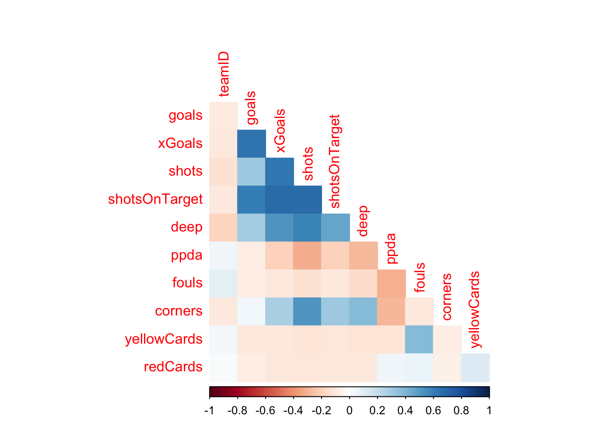
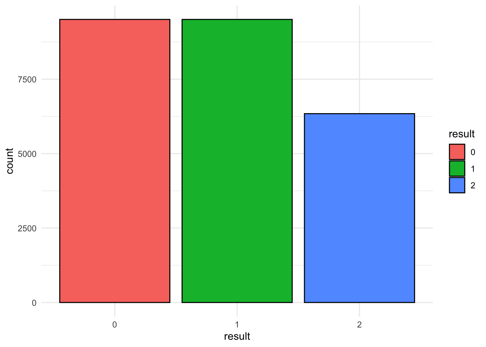
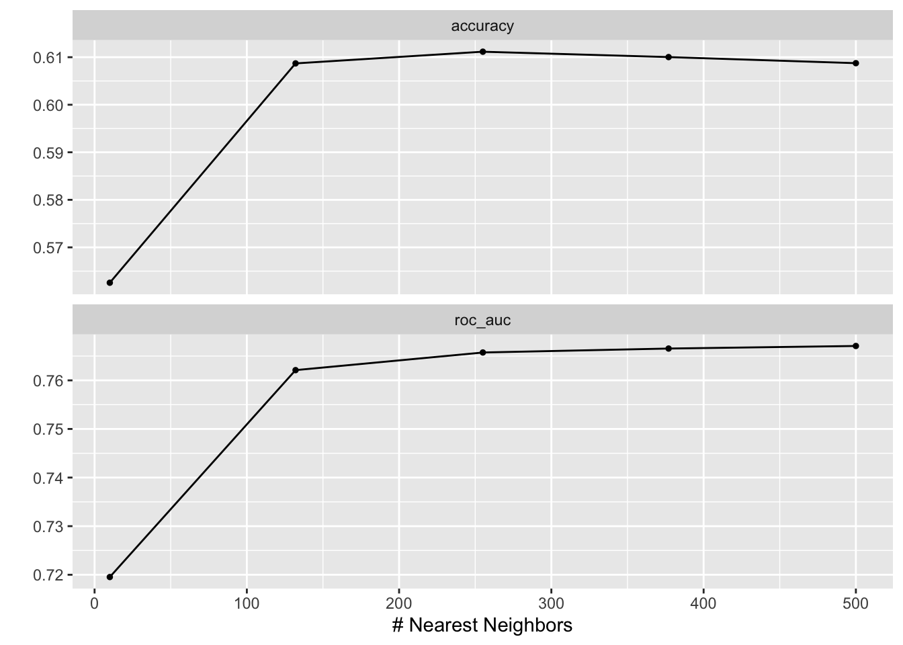

library(DBI) # Contains functions for interacting with database
library(RSQL) # Generate and process SQL queries in R
library(RSQLite) # Can create an in-memory SQL database
library(tidyverse)
# Load each file in
appearances <- read_csv('data/preprocessed/appearances.csv')
games <- read_csv('data/preprocessed/games.csv')
leagues <- read_csv('data/preprocessed/leagues.csv')
players <- read_csv('data/preprocessed/players.csv')
shots <- read_csv('data/preprocessed/shots.csv')
teams <- read_csv('data/preprocessed/teams.csv')
teamstats <- read_csv('data/preprocessed/teamstats.csv')Configuring a Database and Writing Queries in R
In this lab you’ll see how to create a database, write SQL queries, and use the queried data to build models.
Objectives: create a SQL database with multiple csv files; practice writing SQL queries; fit knn and extreme gradient boosting models to queried data.
Databases
Talk about databases and our soccer csv files.
Configuring a Database
Setup
Action
Open RStudio and set up a new script in your lab directory. Copy and paste the code chunk below and execute once.
You may need to install the DBI, RSQL, and RSQLite packages.
Creating the Database
We can start by creating the database connection.
Warning
If the database is not empty, replace “football” with another name for your database.
# Create the database connection
soccer_con <- dbConnect(drv = RSQLite::SQLite(),
dbname = "data/databases/football")
# Check that database is empty
dbListTables(soccer_con)character(0)Populating Database with Tables
We can add tables to our new database using the csv files found in the data folder.
# Load tables into database
dbWriteTable(conn = soccer_con,
name = "appearances",
value= appearances)
dbWriteTable(conn = soccer_con,
name = "games",
value= games)
dbWriteTable(conn = soccer_con,
name = "leagues",
value= leagues)
dbWriteTable(conn = soccer_con,
name = "players",
value= players)
dbWriteTable(conn = soccer_con,
name = "shots",
value= shots)
dbWriteTable(conn = soccer_con,
name = "teams",
value= teams)
dbWriteTable(conn = soccer_con,
name = "teamstats",
value= teamstats)
# Check that database has new tables
dbListTables(soccer_con)[1] "appearances" "games" "leagues" "players" "shots"
[6] "teams" "teamstats" Useful functions
dbListFields(soccer_con, "teams") # list columns in teams dataframe[1] "teamID" "name" sql_teams <- tbl(soccer_con, "teams") # table from SQL connection
class(sql_teams)[1] "tbl_SQLiteConnection" "tbl_dbi" "tbl_sql"
[4] "tbl_lazy" "tbl" df_teams <- collect(sql_teams) # data frame from SQL table
class(df_teams)[1] "tbl_df" "tbl" "data.frame"Writing Queries
We can use SELECT to choose certain variables and FROM to specify which table in the database.
dbGetQuery(soccer_con, "SELECT shooterID, gameID
FROM shots") %>%
head() shooterID gameID
1 554 81
2 555 81
3 554 81
4 554 81
5 555 81
6 555 81We can use * in the SELECT statement to select ALL variables in a table.
dbGetQuery(soccer_con, "SELECT *
FROM shots") %>%
head() gameID shooterID assisterID minute situation lastAction shotType
1 81 554 NA 27 DirectFreekick Standard LeftFoot
2 81 555 631 27 SetPiece Pass RightFoot
3 81 554 629 35 OpenPlay Pass LeftFoot
4 81 554 NA 35 OpenPlay Tackle LeftFoot
5 81 555 654 40 OpenPlay BallRecovery RightFoot
6 81 555 629 49 OpenPlay Pass LeftFoot
shotResult xGoal positionX positionY
1 BlockedShot 0.10434672 0.794 0.421
2 BlockedShot 0.06434220 0.860 0.627
3 BlockedShot 0.05715682 0.843 0.333
4 MissedShots 0.09214139 0.848 0.533
5 BlockedShot 0.03574201 0.812 0.707
6 MissedShots 0.02122466 0.725 0.545We can use functions on variables in the SELECT statement
dbGetQuery(soccer_con, "SELECT count(gameID)
FROM shots") count(gameID)
1 324543We can use a WHERE statement to get observations that match a specific condition.
dbGetQuery(soccer_con, "SELECT count(gameID)
FROM shots
WHERE shotResult = 'OwnGoal'") count(gameID)
1 1014We can use an ORDER BY statement to order observations.
dbGetQuery(soccer_con, "SELECT gameID, shotType
FROM shots
WHERE shotResult = 'OwnGoal'
ORDER BY shooterID desc") %>%
head() gameID shotType
1 14694 LeftFoot
2 16106 LeftFoot
3 14564 RightFoot
4 15624 RightFoot
5 15673 Head
6 15726 LeftFootWe can use a HAVING statement, similar to WHERE however it needs to be used with a GROUPBY statement.
dbGetQuery(soccer_con, "SELECT gameID
FROM shots
WHERE shotResult = 'OwnGoal'
GROUP BY gameID
HAVING shotType = 'LeftFoot'") %>%
head() gameID
1 81
2 104
3 142
4 164
5 208
6 225Joining Tables
There are several kinds of SQL joins that allow us to join tables and extract information that is stored separately.

In order to join tables, we need what is called primary keys. This key will allow us to relate two or more tables and join them. A primary key can uniquely identify an observation and a foreign key establishes a relationship with another table’s primary key.
We can use a left join:
dbGetQuery(soccer_con, "SELECT count(homeGoals)
FROM games
LEFT JOIN shots
ON games.gameID = shots.gameID
WHERE shotResult = 'OwnGoal'") %>%
head() count(homeGoals)
1 1011An inner join:
dbGetQuery(soccer_con, "SELECT count(homeGoals)
FROM games
INNER JOIN shots
ON games.gameID = shots.gameID
WHERE shotResult = 'OwnGoal'") %>%
head() count(homeGoals)
1 1011Inspect the data and try joining multiple tables, here’s an example.
dbGetQuery(soccer_con, "SELECT DISTINCT name
FROM players
JOIN shots
ON players.playerID = shots.shooterID
JOIN games
ON shots.gameID = games.gameID
WHERE season = '2015'") %>%
head() name
1 Juan Mata
2 Memphis Depay
3 Wayne Rooney
4 Ashley Young
5 Kyle Walker
6 Toby Alderweireld# players who took shots in 2015Let’s go through some more example queries and introduce a few more essential concepts.
Concept 1: Creating Columns
Creating and modifying columns enables us to derive new data from existing datasets, enhancing our ability to analyze and understand our data.
Example 1.1
This query adds together the yellowCard and redCard columns to create a new column totalCards. Thus, it indicates the total number of cards a player received in a game.
dbGetQuery(soccer_con, "SELECT playerID, gameID, (yellowCard + redCard) AS
totalCards
FROM appearances
LIMIT 15") playerID gameID totalCards
1 560 81 0
2 557 81 0
3 548 81 0
4 628 81 0
5 1006 81 0
6 551 81 0
7 654 81 0
8 554 81 1
9 555 81 0
10 631 81 0
11 629 81 0
12 552 81 0
13 627 81 0
14 907 81 1
15 651 81 0Example 1.2
This query adds the homeGoals and awayGoals columns to create a new column totalGoals. Thus, it indicates the total number of goals scored in each game.
dbGetQuery(soccer_con, "SELECT gameID, homeGoals, awayGoals, homeGoals + awayGoals AS totalGoals
FROM games
LIMIT 15") gameID homeGoals awayGoals totalGoals
1 81 1 0 1
2 82 0 1 1
3 83 2 2 4
4 84 4 2 6
5 85 1 3 4
6 86 2 2 4
7 87 2 2 4
8 88 0 2 2
9 89 0 1 1
10 90 0 3 3
11 91 0 1 1
12 92 0 3 3
13 93 1 3 4
14 94 2 0 2
15 95 2 2 4Example 1.3
This query creates a new column uniqueID by concatenating playerID and gameID with a hyphen in between.
dbGetQuery(soccer_con, "SELECT playerID, gameID, playerID || '-' || gameID AS uniqueID
FROM appearances
LIMIT 15") playerID gameID uniqueID
1 560 81 560.0-81.0
2 557 81 557.0-81.0
3 548 81 548.0-81.0
4 628 81 628.0-81.0
5 1006 81 1006.0-81.0
6 551 81 551.0-81.0
7 654 81 654.0-81.0
8 554 81 554.0-81.0
9 555 81 555.0-81.0
10 631 81 631.0-81.0
11 629 81 629.0-81.0
12 552 81 552.0-81.0
13 627 81 627.0-81.0
14 907 81 907.0-81.0
15 651 81 651.0-81.0Concept 2: Aggregation Functions
Aggregation functions enable us to find averages, maximums, minimums, counts, sums, etc.
Example 2.1
This query calculates the AVERAGE number of goals scored by each team in each season.
dbGetQuery(soccer_con, "SELECT teamID, season, AVG(goals) AS average_goals
FROM teamstats
GROUP BY teamID, season
LIMIT 15") teamID season average_goals
1 71 2014 0.8157895
2 71 2015 0.7105263
3 71 2019 1.0789474
4 71 2020 1.4473684
5 72 2014 1.2631579
6 72 2015 1.5526316
7 72 2016 1.6315789
8 72 2017 1.1578947
9 72 2018 1.4210526
10 72 2019 1.1578947
11 72 2020 1.2368421
12 73 2015 1.1842105
13 73 2016 1.4473684
14 73 2017 1.1842105
15 73 2018 1.4736842Example 2.2
This query finds the MAXIMUM and MINIMUM number of fouls committed in a single game across all records.
dbGetQuery(soccer_con, "SELECT MAX(fouls) AS max_fouls, MIN(fouls) AS min_fouls
FROM teamstats") max_fouls min_fouls
1 33 0Example 2.3
This query COUNTS the number of wins (‘W’), losses (‘L’), and draws (‘D’) for each team.
dbGetQuery(soccer_con, "SELECT teamID, result, COUNT(*) AS game_count
FROM teamstats
GROUP BY teamID, result
LIMIT 15") teamID result game_count
1 71 D 31
2 71 L 83
3 71 W 38
4 72 D 72
5 72 L 96
6 72 W 98
7 73 D 43
8 73 L 91
9 73 W 56
10 74 D 66
11 74 L 109
12 74 W 91
13 75 D 60
14 75 L 95
15 75 W 111Example 2.4
This query SUMS up the total number of shots and shots on target for home (‘h’) and away (‘a’) games separately.
dbGetQuery(soccer_con, "SELECT location, SUM(shots) AS total_shots, SUM(shotsOnTarget) AS shots_on_target
FROM teamstats
GROUP BY location") location total_shots shots_on_target
1 a 142228 49358
2 h 173794 60130Concept 3: Subqueries
Subqueries are a powerful feature that allow us to use the result of one query as a condition or reference in another. Thus, it enables complex and layered data analysis within a single statement.
Example 3.1
This query finds the percentage of each type of shotResult within the Shots table. In this example, the subquery is used to calculate the total number of shots in the dataset. This is a necessary step to determine the percentage of each shot result.
dbGetQuery(soccer_con, "SELECT shotResult,
COUNT(*) * 100.0 / (SELECT COUNT(*) FROM shots) AS percentage
FROM shots
GROUP BY shotResult") shotResult percentage
1 BlockedShot 24.6475814
2 Goal 10.6297162
3 MissedShots 39.1257861
4 OwnGoal 0.3124393
5 SavedShot 23.3562271
6 ShotOnPost 1.9282499Example 3.2
In this query, the subquery shooterAverages calculates the average xGoal for each shooterID. The main query then selects those shooters whose average xGoal is higher than the overall average xGoal calculated across all shots. Ultimately, we find the shooters that have a higher average xGoal than the average xGoal across the table.
dbGetQuery(soccer_con, "SELECT shooterID AS bestShooters
FROM (
SELECT shooterID, AVG(xGoal) AS avgShooterXGoal
FROM shots
GROUP BY shooterID) AS shooterAverages
WHERE avgShooterXGoal > (
SELECT AVG(xGoal) FROM shots)
LIMIT 15") bestShooters
1 3
2 4
3 11
4 14
5 16
6 18
7 26
8 29
9 34
10 39
11 44
12 45
13 47
14 48
15 53Predictive Modeling Using Queried Data
Action
Copy and paste the code chunk below and execute once.
You may need to install some packages.
library(tidymodels)
library(themis)
library(ggplot2)
library(corrplot)
library(kknn)
library(ranger)
library(xgboost)
library(vip)We can practice modeling and using queries. Here, we’ll build two models that aim to predict whether or not a team will win a game.
Let’s start by creating a query to get a data frame with relevant data.
mdl_data <- dbGetQuery(soccer_con, "SELECT *
FROM games
FULL OUTER JOIN teamstats
ON games.gameID = teamstats.gameID") %>%
collect()Explore and Process Data for Modeling
# collect relevant columns
mdl_data <- mdl_data %>%
select(c(36,39:50))
# factor outcome variable
mdl_data$result <- factor(mdl_data$result, levels = c("L", "W", "D"),
labels = c(0,1,2))
# analyze correlation between variables
mdl_data %>%
select(where(is.numeric)) %>%
cor() %>%
corrplot(type = 'lower', diag = FALSE,
method = 'color')
# check for class imbalances
mdl_data %>%
ggplot() +
geom_bar(aes(x = result, fill = result), color = "black") +
theme_minimal()
Split the data into training and testing sets. Also, create a 5-fold cross validation object.
# set seed for reproducibility
set.seed(1208)
# split data into training, testing, and create 5 folds for cv
mdl_split <- initial_split(mdl_data, strata = "result", prop = 0.8)
mdl_train <- training(mdl_split)
mdl_test <- testing(mdl_split)
mdl_folds <- vfold_cv(mdl_train, strata = "result", v = 5)Create the recipe for the models.
# create recipe
mdl_recipe <- recipe(
result ~ goals + shots + shotsOnTarget + deep + corners,
data = mdl_train) %>%
step_upsample(result) %>%
step_dummy(all_nominal_predictors()) %>% # dummy-code all nominal preds
step_normalize(all_numeric_predictors()) # normalize preds
prep(mdl_recipe) %>% bake(new_data = mdl_train) # prep and bake recipe# A tibble: 20,286 × 6
goals shots shotsOnTarget deep corners result
<dbl> <dbl> <dbl> <dbl> <dbl> <fct>
1 -1.09 -0.673 -0.109 1.05 -1.05 0
2 -1.09 -0.281 -0.932 1.30 0.365 0
3 -0.270 0.894 0.714 -0.191 -1.40 0
4 -1.09 1.87 0.714 1.30 0.0116 0
5 -1.09 -1.06 -1.34 -0.936 -0.696 0
6 -1.09 -0.673 -0.932 -0.439 0.365 0
7 -1.09 -1.46 -1.34 -0.688 -0.696 0
8 -1.09 0.894 -0.109 1.05 1.43 0
9 -0.270 -1.26 -0.932 -0.936 0.365 0
10 -1.09 -1.65 -0.932 -1.43 -0.342 0
# ℹ 20,276 more rowsK-Nearest Neighbors
K-nearest neighbors is a model that uses information about the observations closest to our new observations to classify them. It can be used for both regression and classification problems, but we will use it for classification. The model gets information about the “k” nearest data points and classifies new data points based on the majority.

Build a KNN model.
# create knn model
knn_model <- nearest_neighbor(neighbors=tune()) %>% # tune n
set_engine("kknn") %>%
set_mode("classification")
# create knn workflow
knn_wflow <- workflow() %>%
add_model(knn_model) %>%
add_recipe(mdl_recipe)
# create grid to tune neighbors
knn_tune_grid <- grid_regular(neighbors(range = c(10,500)),
levels = 5)
# tune neighbors
# tune_knn <- tune_grid(
# knn_wflow,
# resamples = mdl_folds,
# grid = knn_tune_grid
# )
# write results to rds file to reduce knit time
# write_rds(tune_knn, file = 'data/tuning/knn_tune.rds')
# read outputted rds file
tune_knn <- read_rds('data/tuning/knn_tune.rds')Inspect the results.
# visualize model performance by number of neighbors
autoplot(tune_knn)
# manually inspect model performance by number of neighbors
collect_metrics(tune_knn)# A tibble: 10 × 7
neighbors .metric .estimator mean n std_err .config
<int> <chr> <chr> <dbl> <int> <dbl> <chr>
1 10 accuracy multiclass 0.563 5 0.00465 Preprocessor1_Model1
2 10 roc_auc hand_till 0.720 5 0.00248 Preprocessor1_Model1
3 132 accuracy multiclass 0.609 5 0.00256 Preprocessor1_Model2
4 132 roc_auc hand_till 0.762 5 0.00147 Preprocessor1_Model2
5 255 accuracy multiclass 0.611 5 0.00249 Preprocessor1_Model3
6 255 roc_auc hand_till 0.766 5 0.00145 Preprocessor1_Model3
7 377 accuracy multiclass 0.610 5 0.00134 Preprocessor1_Model4
8 377 roc_auc hand_till 0.767 5 0.00134 Preprocessor1_Model4
9 500 accuracy multiclass 0.609 5 0.00121 Preprocessor1_Model5
10 500 roc_auc hand_till 0.767 5 0.00127 Preprocessor1_Model5Choose best performing KNN model and finalize model.
# select best performing model based on accuracy
best_knn <- select_best(tune_knn,
metric = "accuracy",
neighbors
)
# finalize workflow
final_knn_wf <- finalize_workflow(knn_wflow,
best_knn)
# fit model to training data
final_knn <- fit(final_knn_wf,
data = mdl_train)Evaluate performance on training data.
# evaluate performance
knn_auc <- augment(final_knn, new_data = mdl_train) %>%
roc_auc(result, .pred_0:.pred_2)
knn_acc <- augment(final_knn, new_data = mdl_train) %>%
accuracy(result, .pred_class)
knn_train_results <- bind_rows(knn_auc, knn_acc) %>%
tibble() %>% mutate(metric = c("roc auc", "acc")) %>%
select(metric, .estimate)
# display
knn_train_results# A tibble: 2 × 2
metric .estimate
<chr> <dbl>
1 roc auc 0.788
2 acc 0.623Extreme Gradient Boosting
Extreme gradient boosting is an algorithm that uses multiple decision trees. It takes in training data, uses it to train a model, and then evaluates the model on new data. This process repeats until the model stops improving.
Build an extreme gradient boosting model.
# create xg boost model
xg_model <- boost_tree(mtry = tune(),
trees = tune(),
learn_rate = tune()) %>%
set_engine("xgboost") %>%
set_mode("classification")
# create xg boost workflow
xg_wflow <- workflow() %>%
add_model(xg_model) %>%
add_recipe(mdl_recipe)
# create grid to tune hyper parameters
xg_tune_grid <- grid_regular(mtry(range = c(1, 6)),
trees(range = c(200, 600)),
learn_rate(range = c(-10, -1)),
levels = 5)
# tune hyper parameters
# tune_xg <- tune_grid(
# xg_wflow,
# resamples = mdl_folds,
# grid = xg_tune_grid
# )
# write results to rds file to reduce knit time
# write_rds(tune_xg, file = 'data/tuning/xg_tune.rds')
# read outputted rds file
tune_xg <- read_rds('data/tuning/xg_tune.rds')Inspect the results.
# visualize model performance by number of neighbors
autoplot(tune_xg)# manually inspect model performance by number of neighbors
collect_metrics(tune_xg)# A tibble: 250 × 9
mtry trees learn_rate .metric .estimator mean n std_err .config
<int> <int> <dbl> <chr> <chr> <dbl> <int> <dbl> <chr>
1 1 200 0.0000000001 accuracy multiclass 0.375 5 0.0000195 Preproces…
2 1 200 0.0000000001 roc_auc hand_till 0.5 5 0 Preproces…
3 1 300 0.0000000001 accuracy multiclass 0.375 5 0.0000195 Preproces…
4 1 300 0.0000000001 roc_auc hand_till 0.5 5 0 Preproces…
5 1 400 0.0000000001 accuracy multiclass 0.375 5 0.0000195 Preproces…
6 1 400 0.0000000001 roc_auc hand_till 0.5 5 0 Preproces…
7 1 500 0.0000000001 accuracy multiclass 0.375 5 0.0000195 Preproces…
8 1 500 0.0000000001 roc_auc hand_till 0.5 5 0 Preproces…
9 1 600 0.0000000001 accuracy multiclass 0.375 5 0.0000195 Preproces…
10 1 600 0.0000000001 roc_auc hand_till 0.5 5 0 Preproces…
# ℹ 240 more rowsSelect the best performing extreme gradient boosting model.
# select best performing model based on accuracy
best_xg <- select_best(tune_xg,
metric = "roc_auc",
mtry,
trees,
learn_rate
)
# finalize workflow
final_xg_wf <- finalize_workflow(xg_wflow,
best_xg)
# fit model to training data
final_xg <- fit(final_xg_wf,
data = mdl_train)Evaluate performance on training data.
# evaluate performance
xg_auc <- augment(final_xg, new_data = mdl_train) %>%
roc_auc(result, .pred_0:.pred_2)
xg_acc <- augment(final_xg, new_data = mdl_train) %>%
accuracy(result, .pred_class)
xg_train_results <- bind_rows(xg_auc, xg_acc) %>%
tibble() %>% mutate(metric = c("roc auc", "acc")) %>%
select(metric, .estimate)
# display
xg_train_results# A tibble: 2 × 2
metric .estimate
<chr> <dbl>
1 roc auc 0.784
2 acc 0.614Choosing Best Model Based on Training Data
We can now compare the two models’ performances and select the one that performs better.
# add model names to results
knn_train_results <- knn_train_results %>%
mutate(model = "K-Nearest Neighbors")
xg_train_results <- xg_train_results %>%
mutate(model = "Extreme Gradient Boosting")
# combine into one table to easily compare
combined_train_results <- rbind(knn_train_results,
xg_train_results)
# display
combined_train_results# A tibble: 4 × 3
metric .estimate model
<chr> <dbl> <chr>
1 roc auc 0.788 K-Nearest Neighbors
2 acc 0.623 K-Nearest Neighbors
3 roc auc 0.784 Extreme Gradient Boosting
4 acc 0.614 Extreme Gradient BoostingThe KNN model performed better on the training data. We can now check its performance on the testing data set.
# evaluate performance
knn_test_auc <- augment(final_knn, new_data = mdl_test) %>%
roc_auc(result, .pred_0:.pred_2)
knn_test_acc <- augment(final_knn, new_data = mdl_test) %>%
accuracy(result, .pred_class)
knn_test_results <- bind_rows(knn_test_auc, knn_test_acc) %>%
tibble() %>% mutate(metric = c("roc auc", "acc")) %>%
select(metric, .estimate)
# display
knn_test_results# A tibble: 2 × 2
metric .estimate
<chr> <dbl>
1 roc auc 0.763
2 acc 0.613# visualize ROC curve
final_knn_test <- augment(final_knn, mdl_test) %>%
select(result, starts_with(".pred"))
final_knn_test %>%
roc_curve(result, .pred_0:.pred_2) %>%
autoplot()# visualize confusion matrix
conf_mat(final_knn_test, truth = result,
.pred_class) %>%
autoplot(type = "heatmap")How did the model perform? What kinds of predictors do you think would be useful to incorporate into the models? Can you create those predictors with SQL queries?
Make sure to close the database connection when you’re done to conserve memory.
DBI::dbDisconnect(soccer_con)